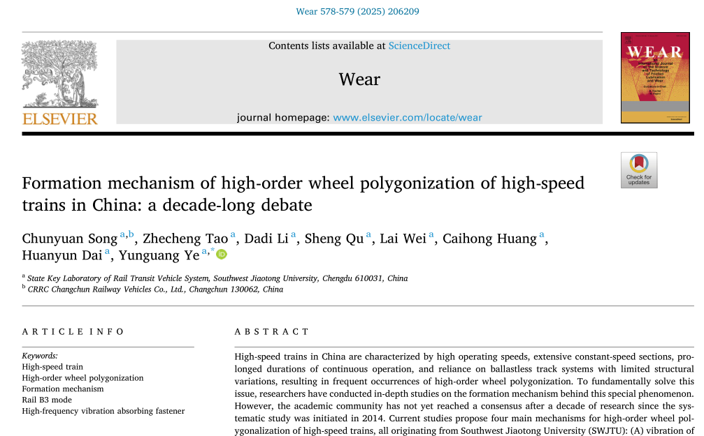

西南交大团队最新《Wear》论文：轨道B3模态才是根本原因，扣件参数匹配决定一切

中国高铁独有的运行特点高速度 + 长大恒速区段 + 长时间连续运营 + 无砟轨道为主让车轮长期处于稳定而强烈的周期性激励之下。
自2014年起，高阶多边形（振动频率主要在500~650Hz，对应18~23阶）频发，不仅大幅增加轮对维护成本，更威胁行车安全。
过去十年，学术界提出四大形成机制（全部来自西南交大），却始终未达成共识。
| 机制 | 核心观点 | 主要争议 |
|---|---|---|
| A | 转向架部件振动（框架/轮对模态） | 无法解释相同车辆在不同轨道上PWP频率差异 |
| B | 摩擦自激振动（蠕滑力饱和） | 恒速运行时蠕滑力很难饱和，哈大线冰雪天气反而多边形较轻 |
| C | 轨道B3模态（轮对间轨段三阶弯曲模态）共振 | 本文最终证明的正确机制 |
| D | B3模态 + 显著频率偏移（55~95Hz） | 模拟与实测偏差过大，无法解释共振现象 |
西南交大团队通过车辆跟踪试验 + 轨道模态试验 + 动力学仿真三管齐下，彻底证明：
核心结论：
轨道B3模态振动是高阶车轮多边形的根本诱因，扣件参数匹配特性显著调控B3模态振动，优化参数匹配关系可有效抑制多边形发展。
扣件不是简单的弹簧，而是双层弹性垫 + 铁垫板的动力吸振器（DVA）结构！
团队首次把真实扣件（W300-1、WJ-8、WJ-7）的质量、刚度、阻尼全部测出来，建立了双层扣件精细模型（此前多数研究用单层简化模型，误差巨大）。
| 扣件 | m (kg) | k_up (MN/m) | k_lo (MN/m) | DVA频率 (Hz) | B3频率 (Hz) |
|---|---|---|---|---|---|
| WJ-8 | 6.8 | 350 | 35 | 1197.6 | 582.5~588.7 |
| WJ-7 | 10.4 | 55 | 1000 | 1603.0 | 641.7~647.1 |
| 优化扣件 | 8 | 63.6 | 63.6 | 634.6 | 588.7~592.6 |
优化方案：保持WJ-8总体刚度不变，调整铁垫板质量=8kg、上下垫刚度=63.6 MN/m，DVA频率精准调到B3频率附近。
此前缓解措施（频繁镟轮、变速运行、加装动力吸振器）要么成本高，要么管理难。
高频吸振扣件的优势：
仿真结果：多边形发展里程从26万公里延长至50万公里（正常工况）；轮扁工况下从13.5万公里延长至19.5万公里。